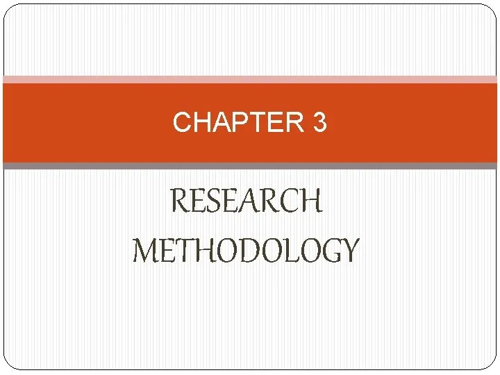
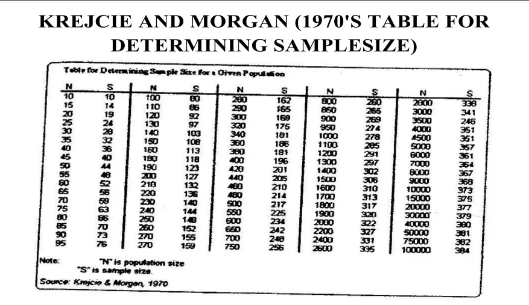

Expanded Nursing Uganda Explanation
Methodology should be reviewed through safe maternal and newborn assessment, early recognition of danger signs, respectful communication and timely referral. Connect the definition to vital signs, bleeding, fetal or newborn wellbeing, patient education and local protocol requirements.
Contents, 25 sections (tap to expand)
01 Overview
Chapter three (3) shall be structured as follows:
- 3.0 Introduction: It should introduce the summary of this Chapter in one paragraph.
- 3.1 Study design: which must include the rationale;
- 3.2 Study setting: which must include the rationale;
- 3.3 Study population;
- 3.4 Sample size determination and its justification (Use simple scientific methods);
- 3.5 Sampling method/procedure which must include the rationale;
- 3.6 Inclusion and exclusion criteria;
- 3.7 Study variables;
- 3.8 Research instruments/tools;
- 3.9 Data collection method /procedure;
- 3.10 Data management and analysis;
- 3.11 Quality Assurance: Validity and Reliability;
- 3.12 Ethical considerations;
- 3.13 Limitations to the Study;
- 3.14 Dissemination of study findings;
02 3.1 Study Design
Study or Research design defines the approaches, methods, and the rationale of picking that appropriate research design.
- Example: descriptive cross-sectional design.
- Approaches can be Quantitative/qualitative or both.
- Note: It is advisable to use one of these at our level.
- The design is the structure of the study. This is the framework for the methodology to be applied while collecting data, sampling, analyzing data, etc.
- The function of a study or research design is to ensure that the evidence obtained enables us to answer the initial question as unambiguously as possible. In other words, when designing research we need to ask: Given this research question/problem, what type of evidence is needed to answer the question in a convincing way?
- You should always state the reason/rationale for using that particular design (why that particular design).
Example: “The study will use a cross-sectional descriptive study design enables the researcher to collect data from many participants at a single point in time, saving both time and resources.”
03 3.2 Study Setting
Also called the study area.
- It helps the reader to locate where your study is to be done from.
- Direct the reader in terms of location (Where are you going to do the study from?).
- Why that setting? (State the rationale for using that setting).
Example: “Study will be carried out at ART clinic of Kayunga Hospital in Kayunga district, which is located in the central part of Uganda. ART clinic operates daily from Monday to Friday from 8 am to 4 pm. It has a total of 10 nurses, 2 laboratory technicians, 2 clinical officers, and 1 medical officer. This clinic receives on average a number of 150 patients on every clinic day. The study setting was chosen because the ART clinic serves a big population of about 4500 HIV/AIDS infected people.”
04 3.3 Study Population
Explain the population from which your sample will be collected.
- This is the population that the results will be generalized to.
- Give the rationale for the selected population.
- Population: This is the total of items or events in a set; with relevant characteristics that a researcher needs (It is the total number of potential subjects/respondents for a study).
- The population should be clearly defined before a decision is taken on how to sample it.
- Sampling is not necessary if the population is small.
Example: “This study will be carried out among HIV-infected clients attending Kayunga ART clinic and who are on first-line ART regimens for at least three years. Kayunga ART clinic has a total of 4791, of which 2728 are on 1st-line ART regimen. The clinic usually receives about 50 clients who are on 1st-line ART regimen per day and therefore a total of 250 clients on 1st-line ART will be available for data collection within 5 days of data collection.”
05 3.4 Sample Size Determination
Sampling is the process of selecting a subset (sample) from a large group of people (population).
06 Steps in sampling:
- Define the population.
- Identify the sampling frame (i.e., list of participants from which a sample can be selected).
- Select a sampling procedure; this could be probability or non-probability sampling.
- Determine the sample.
- Draw the sample.
- Give justification.
- State the standardized method you will use to estimate the sample size.
Example: “Using Krejcie and Morgan (1970)’s table, when a population is 250, a total sample size of 150 respondents is supposed to be sampled.”
07 3.5 Sampling Procedure
This refers to the way you select your participants to include in your study. It can be Probability or non-probability sampling.
- Probability sampling involves: Simple random sampling.
- Systemic sampling.
- Stratified sampling.
- Cluster sampling.
- Non-probability sampling involves: Convenience sampling.
- Purposive/judgmental sampling.
- Snowball sampling.
- Quota sampling.
- Explain how the subjects will be selected during sampling.
Example: “For example, a proportionate quota sampling method will be used to sample representative clients on the different first-line ART regimens.”
State the reason (rationale) why you have decided to use that particular procedure.
08 3.6 Inclusion and Exclusion Criteria
This gives a narration of which people among the selected population will qualify to participate in your study. Those who do not qualify are excluded from your study.
- Inclusion criteria: are characteristics that the prospective subjects must have if they are to be included in the study.
- Inclusion criteria may include factors such as age, sex, race, ethnicity, stage of disease, the subject’s past treatment history, etc.
Example: “For participants to be included in this study, they have to be clients on 1st line-ART regimen for at least 3 years and are attending ART clinic at Kayunga Hospital during the time of data collection. They must also be 18 years of age and above, since 18 years of age is the consent age according to the Ugandan constitution.”
09 3.7 Study Variables
- Definitions of Variables: A measurable characteristic that assumes different values among the subjects. It’s a value of interest to the researcher.
- Basically, variables can be: Dependent
- Independent
- Intervening
- Let the reader know what (define) your dependent variable and independent variables of the study are.
Example: “The dependent variable of this study is the virological outcome (level of viral load). In this study, the level of viral load means the amount (measure) of Plasma HIV-1 RNA. Viral load is measured in ml/copies. A viral load of >5000 copies/ml at 12 months of antiretroviral treatment will be taken as an indication for virological failure (similar to WHO recommendation in resource-limited countries).”
10 3.8 Research Instruments
This refers to the tools you are going to use to answer your objectives. They include:
- Questionnaires
- Interviews
- Checklists
- Standardized tests
Explain the instruments that will be used to collect data.
Example: “The researcher will use a questionnaire which consists of both open and close-ended questions written in simple language and will be filled by the researcher himself and his assistant by use of patient’s files and interview of clients. The questionnaire written by the researcher will be pretested to adjust for any ambiguity or errors and corrections will be made.”
11 I. Questionnaires
This mainly involves the use of pre-determined answers to gather information from participants. It mainly has two forms: Self-administered and Researcher administered. Questions can be closed-ended or open-ended.
12 Comparison of Questionnaire Types
- Self-Administered Questionnaires Researcher-Administered Questionnaires
- Advantages: Convenience: Participants can complete at their own pace. Privacy: Respondents have privacy for sensitive questions. Time Flexibility: Participants can choose when to complete. Cost-Effective: No researcher presence reduces data collection costs. Large Sample Size: Suitable for reaching a larger, spread sample. Reduced Researcher Bias: Participants may provide candid responses. Advantages: Clarity: Researchers can clarify questions for better understanding. Motivation: Higher motivation can lead to improved response rates. Probing: Allows probing to ensure thorough and accurate responses. Control: Researchers can control the survey environment. Data Quality: Offers control over data quality and completeness. Clarification: Offers the ability to probe and clarify ambiguous answers.
- Disadvantages: Non-Response Bias: Response rates might be lower, potentially biased. Misinterpretation: Participants might misunderstand questions. Incomplete Responses: Respondents may skip or provide incomplete answers. Low Control: Researchers have limited control over survey environment. Limited Probing: Researchers cannot probe further for clarification. Disadvantages: Time-Consuming: Due to researcher presence. Researcher Influence: Presence of a researcher can influence responses. Costly: Due to resources needed for administration. Limited Anonymity: Might affect the honesty of responses. Geographical Constraints: Limit participant availability.
13 II. Interviews
These are mainly used to get responses for qualitative data. They could be used as:
- Interview guides.
- Focus Group discussion interviews - of 5 to 10 members.
14 III. Checklists
Also called observation forms. Researcher ticks responses on observation of what has been done or not. In many studies, rating is done thereafter.
15 IV. Standardized tests
These are tools used to score all populations across the board. For example, when scoring IQ levels of children, cognitive tests.
16 3.9 Data Collection Procedures
This involves the use of the selected tool/tools to gather information from the participants.
- It explains how the selected data tool will collect the information.
- These are selected depending on the design and approach selected.
- Here, you explain the whole procedure of data collection.
Example: “A letter obtained from the research committee will be taken to the management of Kayunga Hospital and to the ART clinic to allow the researcher to carry out data collection among HIV-infected clients on 1st line ART regimens. One clinician will be identified from the ART clinic and will be trained as a research assistant to help in filling in the questionnaires. A verbal and written consent will be obtained from respondents before data collection and an appreciation in form of thanks will be told to clients.”
17 3.10 Data Management
This involves the cleaning of data to correct any missing errors.
- It involves pre-cleaning before actual data entry to eliminate wrong data entry.
- Explain how data will be managed.
Example: “After data collection, every questionnaire will be checked for completeness and any gaps will be filled immediately before the client leaves the clinic. The questionnaire will be kept under key and lock only accessible to the researcher and his assistant on request, then it will directly be entered into SPSS software package for social science version.”
18 3.11 Data Analysis
After data has been cleaned, it is then analyzed and interpreted to make meaningful statements.
- This is then followed by making interpretations of findings before the actual generalization of the research findings.
- Explain how data will be analyzed.
Example: “Data will be entered directly into SPSS 17 for data analysis and will be analyzed starting with the demographic data and then the other objectives. The analyzed data will then be presented in form of percentages and frequencies in tables, pie charts, and graphs.”
19 3.12 Ethical Considerations
This looks at the ethics of your research (Protection of Human Subjects).
- Informed consent
- Confidentiality
- Ethics committees
- Privacy
- Explain how you will meet the ethical guidelines of research.
Example: “Research proposal will be submitted to the Research and Ethical Committee at Makerere University for approval. A letter from the Committee will be taken to Mulago Hospital management and ART clinic to seek permission to pre-test the Questionnaire. The same letter will be taken to Kayunga District hospital management and ART clinic where data collection will be done to seek permission to carry on data collection among HIV-infected clients on 1st, line ART regimens.”
20 3.13 Limitations to the Study
These are anticipated challenges imposed by methods, period, and location of research.
- The researcher may not have control over them and therefore the need to identify them so that possible solutions can be planned before beginning the study.
- They also help in predicting the necessary help needed and the feasibility of the research.
- Explain the constraints you are likely to meet and how you will overcome them.
Example: “The researcher expects to encounter time constraints in the course of study, balancing the research study and other demanding work. The researcher will overcome this limitation by drawing up a timetable that will be strictly followed.”
21 3.14 Dissemination of Study Findings
Research findings must be shared with the relevant concerned bodies who might be interested in your findings.
- It can also be published as reports, journals, CMEs, posters in conferences, etc.
- Dissemination helps other scholars know what has been done.
- List how and where you will communicate your results.
Example: “Information from the study will be compiled into a research report and four copies of the research report will be made. A copy will be submitted to; Makerere University, Kayunga Hospital ART clinic, Research Supervisor, and the Researcher.”
22 Nursing Uganda Clinical Lens
Use Methodology as a practical nursing topic, not only a memorized definition. Translate theory into safe decisions, accountability, communication and service improvement.
- What to understand first: define methodology, identify the normal or expected pattern, then explain what changes when the patient is unwell.
- Why it matters in care: the nurse must recognize risk early, explain findings clearly, document accurately and know when to escalate.
- How to revise it: connect each point to assessment, nursing diagnosis or care problem, intervention, rationale and evaluation.
23 Assessment Guide
- The problem, stakeholders, available resources, policy requirements and ethical issues.
- Risks to patients, staff, confidentiality, quality, costs and continuity.
- Documentation, reporting lines, supervision and evaluation measures.
24 Nursing Priorities, Rationales and Outcomes
- Use evidence, policy and professional standards to guide action.
- Communicate clearly, document decisions and protect confidentiality.
- Evaluate whether the action improves safety, learning or service delivery.
The rationale for these priorities is patient safety: nursing actions should prevent deterioration, reduce discomfort, support recovery and create clear evidence for the next caregiver.
- Expected outcome: The plan is documented, realistic, ethical and improves patient care or learning outcomes.
25 Patient Teaching and Revision Check
- Explain methodology in simple language the patient or caregiver can repeat back.
- Teach warning signs, medicine or follow-up instructions, hygiene or lifestyle points where relevant.
- For exams, prepare a short answer using: definition, causes or risk factors, signs, assessment, management, complications and prevention.
- For ward practice, document baseline findings, actions taken, patient response and the plan for review.
Illustrations and Diagrams (7)




Related Video Lectures
Watch nursing lecture videos on YouTube for this topic. Opens in a new tab.
Watch on YouTubeExternal link: YouTube may use its own cookies and terms. Nursing Uganda is not affiliated with YouTube.